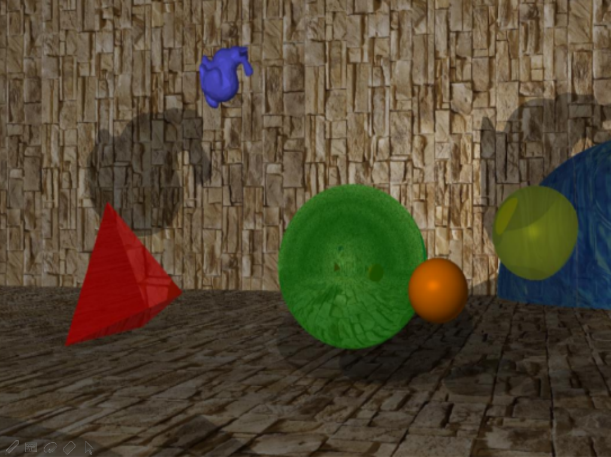
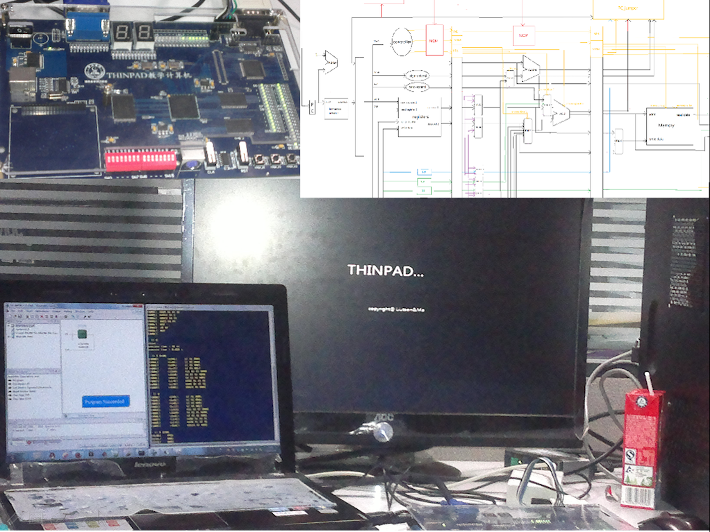
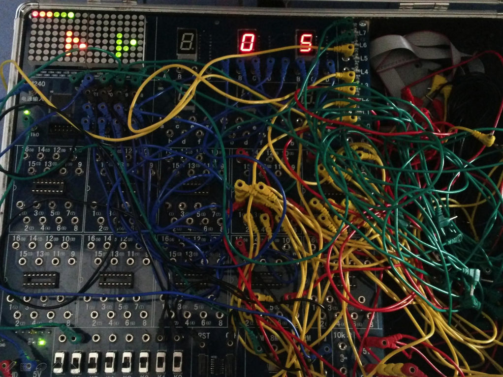

Projects
Artificial Intelligence and Machine Learning
Image Classification
Tag: Python, Matlab, SVM, Neural Network, Deep Learning. Date: December, 2015
This project aims to classify tens of thousands of images on four categories. We have built several classifiers based on logistic regression, SVM and different neural networks.Report Source Code |
||
 |
Unsupervised and Reinforcement Learning
Tag: Matlab, Neural Network Date: December, 2015
These are two miniprojects. One is unsupervised learning: kohenon network to cluster pictures of digits; another is reinforcement learning: SARSA to train mouses for goal zone. Both of them are based on neural networks.Report |
Convex Optimization
Robust Fisher Linear Discriminant Analysis
Tag: Dual Problem, Parameterization, Robustness Analysis Date: May, 2016
This project implements robust fisher linear discriminant analysis introduced in Kim's paper. We use a unique parameterized gradient descent method to optimize the SOCP problem in the paper.Report Source Code |
Computer Graphics and Multi Media
Media Computing
Tag: C/C++, OpenGL. Date: January, 2015
These are two smaller projects concerning media computing. They implement two important algorithms: graph-based salient region detection and pixel-based image inpainting. Both of them are written in C/C++.Report Source Code 1 Source Code 2 |
||
|  |
Ray-Tracing
Tag: C++, OpenCV Date: June, 2013
Implement ray-tracing to render a picture, including reflection, refraction, texture, depth of focus etc.Demo Source Code |
|
 |
Mesh Simplification
Tag: C++, OpenGV Date: June, 2013
Implement mesh simplification algorithm to reduce the number of points in a 3D space describing an object and maintain its shape.Source Code |
Software Development
 |
An Omnipotent Card Game Center
Tag: Golang, REVEL, Formal Language Date: December, 2013
An online game center supporting any games based on poker, the rule of which was written by users. I have designed a formal language to describe any game based on poker.Card Rules Source Code |
Hardware Design
|  |
A Computer System Based on 16-bit MIPS Pipeline CPU
Tag: VHDL, Pipeline CPU, MIPS Date: December, 2013
Use VHDL to build a computer system, including 16-bit MIPS CPU, BIOS boot partition and VGA output. This computer system can be controlled by a terminal on a PC via serial port.Slides Source Code |
|
|  |
A Simple Rhythm Master Game Platform
Tag: VHDL, Digital Circuits Date: June, 2013
Use a 8*16 LED matrix, CPLD with only 240 logic unit plus few independent digital circuits to build a simple platform on which we can play rhythm games.Demo Video Slides Source Code |